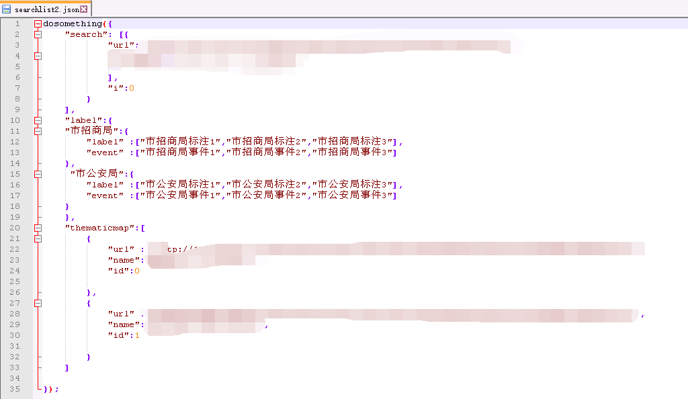

JavaScript 跨域详解
2018年4月21日
JavaScript 跨域详解
什么跨域
端口、域名、协议任何一个不同都视为跨域。
1 跨域资源共享（CORS）
CORS（Cross-Origin Resource Sharing）跨域资源共享。
服务器端对于CORS的支持，主要就是通过设置Access-Control-Allow-Origin来进行的。如果浏览器检测到相应的设置，就可以允许Ajax进行跨域的访问。
2 JSOUP
实现方案
1 | <script type="text/javascript"> |
返回示例如下：

通过以上方案在script中加入请求，但是要注意，如果要在dosometing中返回参数处理，那么服务器端要进行配合，返回相应参数。而在jquery中这个函数会在jquery中生成。
优缺点
JSONP的优点是：它的兼容性更好，在更加古老的浏览器中都可以运行，并且在请求完毕后可以通过调用callback的方式回传结果。
JSONP的缺点则是：它只支持GET请求而不支持POST等其它类型的HTTP请求；它只支持跨域HTTP请求这种情况，不能解决不同域的两个页面之间如何进行JavaScript调用的问题。